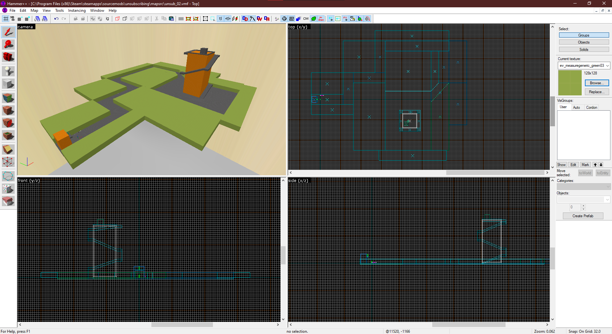
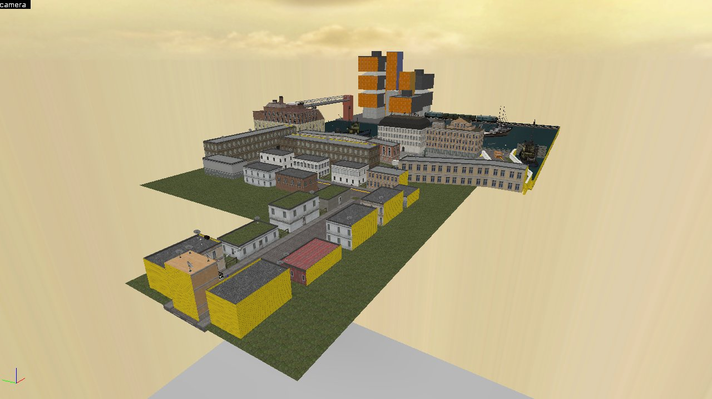
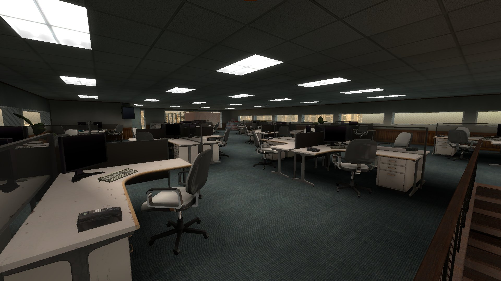

Unsubscribing
Description and project breakdown.
Description
- Solo
- 2 months
- Source SDK 2013
Unsubscribing is an Half-Life 2 mod made of two levels with the common theme of unsubscribing to a service, in one way or another.
Project breakdown
Unsubscribing should have had three levels, but the allocated time to it (mid-July to early November, full time) left just enough for two completed levels. Robot Destruction (RD) was the first completed map, as it was just an improved version of a map I presented in "Map Labs: Crossfire". Television Rules The Nation (TRTN) was created for this mod.
Television Rules The Nation
In TRTN, the President is also a TV channel's director. As the channel's editorial line shifted, more and more customers would like to unsubscribing, to no avail. Until the player takes matters in their own hands and decide to meet the President.
The first section is a rail shooter prototype, where we shoot on TVs to score points. While this is a novel concept for Half-Life, it lacks in arguments for its inclusion in its actual state. I would have liked to have NPCs throwing TVs from their rooftops, which would better convey the story.
The second section lets players explore the headquarters of the TV channel, where an elevator needs to be fixed and the player gets better weapons. Finally, the player meets the President, ending the level with a battle between them and the President's own militia.
The first section had two iterations:
 The tower got a drastic makeover in its scale and appearance. The later version is inspired from the Tolbiac campus in Paris. As I never went there, it was easier to invent rooms inside rather than constraint myself with what I saw. The rail shooter is also longer and takes more turns.
Once the first section done, I built interiors that would convey two feelings: these towers are real workplaces, and people working there have no grip on reality - conveyed with the architecture.
The Source Engine is known for its liminal spaces it can easily create. Empty spaces, but giving off the strange impression they are lived in. I hope I was able to transmit this with the office location.
This part lacks in signage and guiding players on what to do, everything relies on exploring and interacting with objects without clear indication they're interactable. I don't do this anymore.
The last section was the last to be built, and the one I enjoyed creating the most. I used Faceposer, the engine's tool to create scripted sequences with lipsync and movement.
It was also the first opportunity I had to design a combat sequence. I enjoyed placing enemies and timing when they would intervene, on the same beat as the music I chose... It was very much not the best combat of the year, but it works well enough.
With the release of the Steam Workshop for Half-Life 2's 20th anniversary, I may revisit this map to improve it with what I learned over the years.
Robot Destruction
Crossfire, one of the most well-known multiplayer maps of Half-Life, meets the Team Fortress 2 rendition of a space artstyle.
Between the original version and this one, I added a scripted introduction and two more endings, additionnal visual effects, and reworked spaces. While the latest iteration is more interesting, the core mechanics at play in this map do not fit with the layout. Which shouldn't be a surprise for a multiplayer map, trying to deliver a singleplayer experience.
Overall, Unsubscribing was a good experience to showcase the level design skills I had back then. The Source Engine, while outdated, can still enable people to tell stories and create outstanding experiences with little to no programming skills. I sometimes encourage people to go with this engine if they want to create something as a first experience in game development, although more modern alternatives exist and should be considered too.